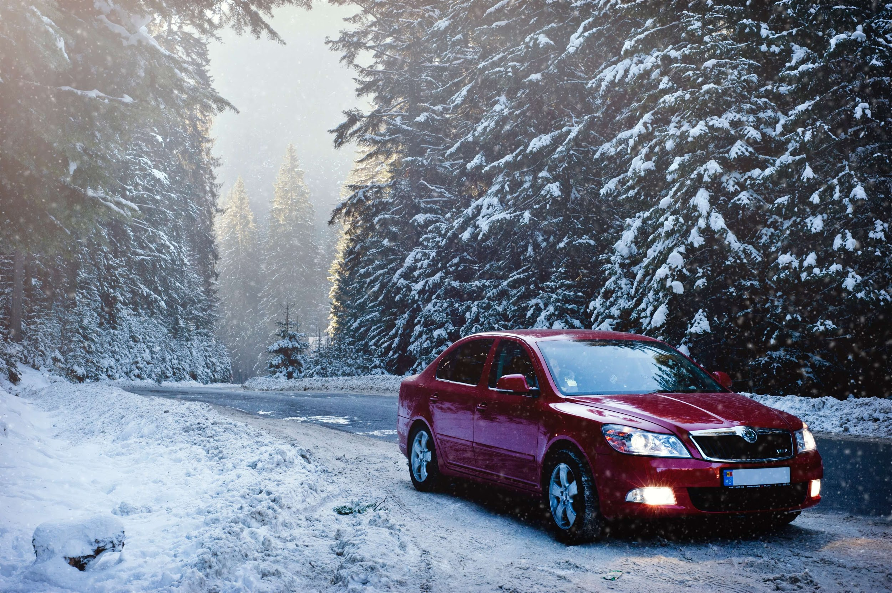
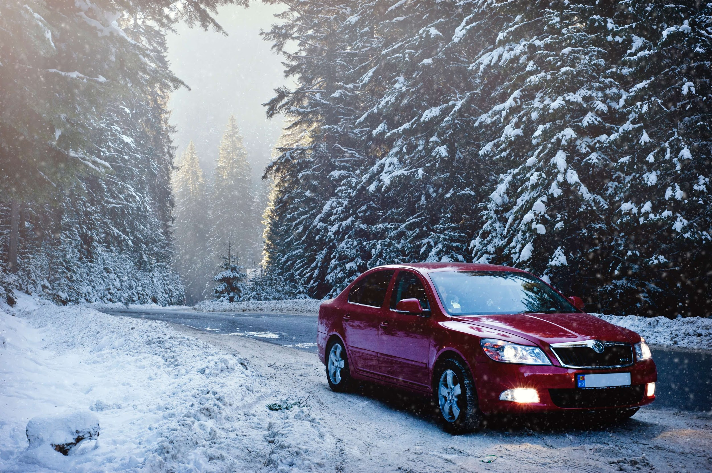

👉 Při brzdění slyšíš pískání nebo drhnutí? Volant vibruje? Zkontroluj tloušťku destiček – pod 3 mm je výměna nutná.
👉 Většina stěračů má systém „klik“. Zvedni rameno stěrače, zmáčkni pojistku a jednoduše vysuň starý stěrač. Nový nasaď stejným způsobem.
👉 Zapni světla a rádio bez nastartování. Pokud světla slábnou, baterie může být vybitá. Můžeš taky použít voltmetr – pod 12,4 V značí slabší baterii.
👉 VIN (17 znaků) najdeš v TP nebo na karoserii. Zadej ho do vyhledávače na našem e-shopu – automaticky ti ukáže kompatibilní díly.
👉 OEM = originál od výrobce, dražší, ale jistota kvality. Aftermarket = levnější alternativa, vhodná pro starší vozy nebo běžné opravy.
👉 Podezřele nízká cena, chybějící značka, jiné balení, hrubé zpracování. Nakupuj pouze od ověřených prodejců.
✅ Držák na mobil s magnetem
✅ Sluneční clona proti oslnění
✅ Vonítko do ventilace
✅ Organizér do kufru
✅ Reflexní vesta a škrabka
👉 Legální LED musí mít homologaci (označení E nebo RL). V interiéru nejsou omezení, ale pro přední světlomety platí přísná pravidla.
👉 Existují bezvrtací typy do SPZ. Zapojíš je přes napájení zpátečky, senzor se aktivuje při couvání.
👉 Smíchej 1 díl octa, 1 díl vody a pár kapek jaru. Nastříkej a setři mikrovláknem – levné a účinné.
👉 Recenze zákazníků, telefonická podpora, možnost vrácení zboží a jasné kontaktní údaje – to jsou znaky seriozního e-shopu.
👉 Sbírej body za každý nákup a získej slevy na příští objednávku. U některých bank nebo portálů můžeš získat až 5 % zpět z nákupu.
✅ Zkontroluj baterii
✅ Přezuj pneumatiky
✅ Doplň nemrznoucí kapalinu
✅ Namaž těsnění dveří
✅ Přibal smetáček a škrabku
✅ Zkontroluj topení
✅ Přidej výbavu pro zimu (řetězy, lopata, deka)
👉 Používej sluneční clony, parkuj ve stínu, ošetři palubku UV ochranným sprejem a větrej auto před jízdou.
 
